「대량 주문 매출 확대」 목표에 완료 건수, 처리시간과 만족도 KPI를 붙입니다. 프로세스를 한 번 더 완료하고 설문에 응답한 뒤 측정값이 어떻게 달라지는지 확인합니다.
설치본 수정이 필요합니다
이 장의 실행 화면은 아래 수정을 넣은 설치본(2026-10-30)에서 찍었습니다. 이 수정이 설치 저장소에 들어가기 전의 설치본에서는 전략 서비스 연결이 되지 않을 수 있습니다. 들어가면 이 안내를 지웁니다.
- 설치: process-gpt-infra-docker #1 — 전략 서비스의 그래프 DB 연결
실행 기록을 목표에 연결합니다#
16장에서는 완료한 업무의 시간과 병목을 읽었습니다. 이번에는 한빛오피스의 전략목표를 만들고, 프로세스 기록과 설문 응답을 KPI로 연결합니다.
장진영이 관리자로 목표와 KPI를 등록합니다. 김민지는 영업 제안서 작성을 처리하고 만족도 설문에 응답합니다. 장진영도 설문에 응답한 뒤 측정값을 갱신합니다.
이번 목표 이름은 「대량 주문 매출 확대」입니다. 연결할 지표는 제안서 발송 건수, 승인 처리 시간과 제안서 만족도입니다. 이 실습에서는 매출액 자체를 측정하지 않습니다. 보드의 목표 이름과 실제로 측정하는 항목을 구분합니다.
따라 하기 1 — 전략 보드 살펴보기#
- 사이드바의 「Strategy Board」를 엽니다.
- 「BSC 전략맵 · KPI · 이니셔티브 관리」라는 설명을 확인합니다.
- 「재무」·「고객」·「내부 프로세스」·「학습과 성장」 네 줄을 살펴봅니다.
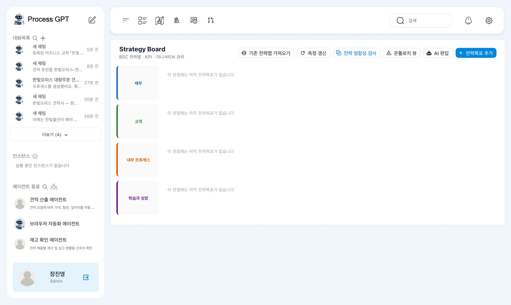
빈 줄에는 「이 관점에는 아직 전략목표가 없습니다」가 표시됩니다. 위에는 「기존 전략맵 가져오기」·「측정 갱신」·「전략 정합성 검사」·「온톨로지 뷰」·「AI 편집」·「+ 전략목표 추가」가 있습니다.
이번 실습에서는 목표를 직접 추가합니다. 네 관점에 모두 목표를 채우지는 않습니다. 재무 관점에 목표 하나를 만들고, 그 목표에 세 KPI를 연결해 측정 변화를 확인합니다.
따라 하기 2 — 전략목표 추가하기#
- 「+ 전략목표 추가」를 누릅니다.
- 「이름」에 「대량 주문 매출 확대」를 입력합니다.
- 「설명」에 「대량 주문(사무 가구 20개 이상) 매출을 늘린다」를 입력합니다.
- 「관점」이 「재무 관점」인지 확인합니다.
- 「전략적 중요도」의 기본값 3을 확인하고 「저장」을 누릅니다.
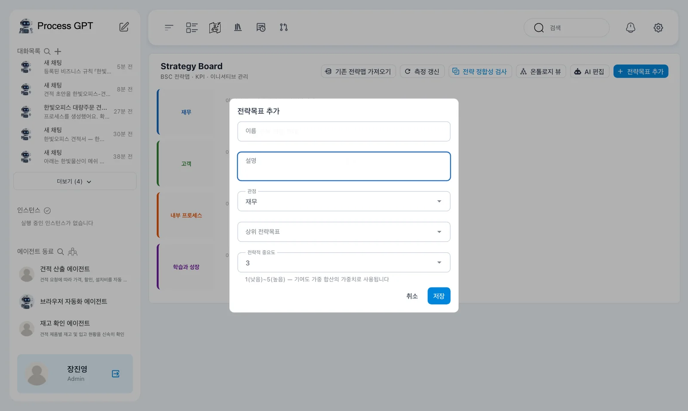
창에는 「상위 전략목표」도 있습니다. 이번에는 보드에 첫 목표를 추가합니다. 「전략적 중요도」에는 「1(낮음)~5(높음) — 기여도 가중 합산의 가중치로 사용됩니다」라는 설명이 있습니다.
목표의 설명에 적은 20개 이상이라는 기준은 목표를 설명하는 문장입니다. 뒤에서 연결할 완료 건수 KPI가 주문 수량을 자동으로 걸러 준다고 해석하지 않습니다. 촬영에서는 프로세스 정의를 연결하여 완료 건수를 측정했습니다.
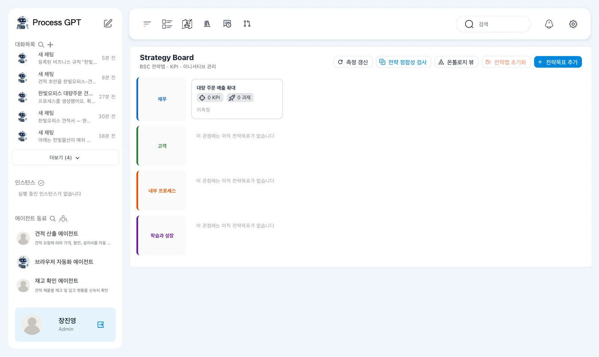
따라 하기 3 — 제안서 발송 건수 KPI 만들기#
- 보드의 「대량 주문 매출 확대」 카드를 누릅니다.
- 오른쪽 패널에서 「KPI」 탭을 확인하고 「+ KPI 추가」를 누릅니다.
- 아래 표에 맞춰 이름, 설명, 측정 방식과 연관 프로세스를 입력합니다.
- 단위, 기준선, 목표치와 방향을 확인한 뒤 저장합니다.
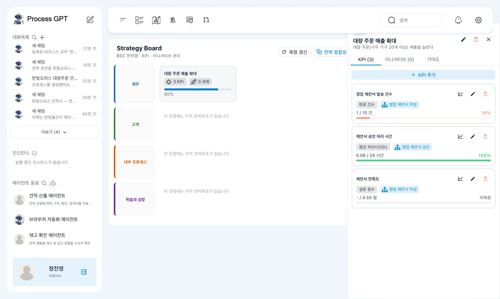
목표 패널 위에는 연필, 휴지통과 닫기 표시가 있습니다. 이번에는 「KPI」 탭에서 측정 항목을 만듭니다. 「이니셔티브」와 「기여도」에는 이번 실습에서 별도 내용을 추가하지 않습니다.
| 칸 | 입력하거나 선택할 값 |
|---|---|
| 「이름」 | 「영업 제안서 발송 건수」 |
| 「설명」 | 「고객에게 보낸 영업 제안서 수」 |
| 「측정 방식」 | 「완료 건수」 |
| 「연관 프로세스 정의」 | 「영업 제안서 작성」 |
| 「단위」 | 「건」 |
| 「기준선」 | 0 |
| 「목표치」 | 10 |
| 「방향」 | 「높을수록 좋음」 |
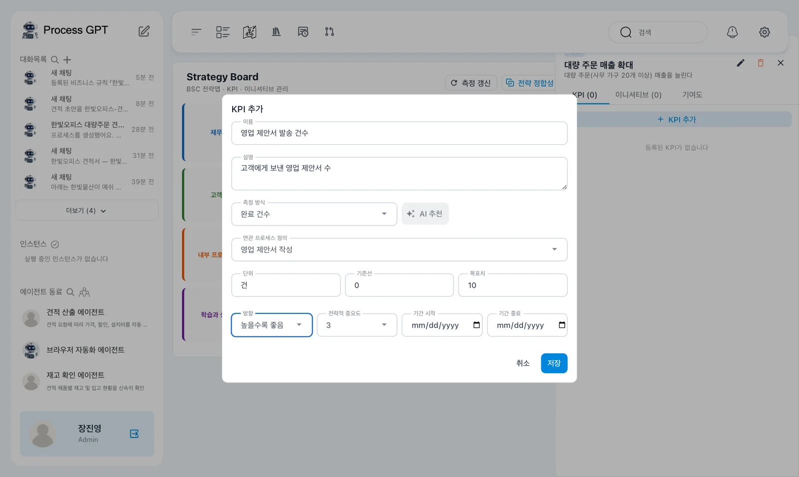
「KPI 추가」 창에는 「전략적 중요도」와 「기간 시작」·「기간 종료」도 있습니다. 「측정 방식」 옆에는 「AI 추천」이 있습니다. 이 장에서는 촬영에서 확인한 측정 방식과 수치를 직접 입력합니다.
이 지표의 이름은 발송 건수이지만 실제 선택한 측정 방식은 「완료 건수」입니다. 연결한 프로세스의 완료 기록을 세는 실습입니다. KPI 이름만 보고 이메일 발송 시스템에서 건수를 가져온다고 생각하지 않습니다.
따라 하기 4 — 승인 처리 시간 KPI 만들기#
- 목표 패널에서 다시 「+ KPI 추가」를 누릅니다.
- 아래 표에 맞춰 「제안서 승인 처리 시간」을 입력합니다.
- 측정 방식의 시간 단위와 기준선·목표치를 확인합니다.
- 「방향」을 「낮을수록 좋음」으로 선택하고 저장합니다.
| 칸 | 입력하거나 선택할 값 |
|---|---|
| 「이름」 | 「제안서 승인 처리 시간」 |
| 「설명」 | 「고객 요청부터 승인된 제안서를 보내기까지 걸린 평균 시간」 |
| 「측정 방식」 | 「평균 처리시간(h)」 |
| 「연관 프로세스 정의」 | 「영업 제안서 승인」 |
| 「단위」 | 「시간」 |
| 「기준선」 | 48 |
| 「목표치」 | 24 |
| 「방향」 | 「낮을수록 좋음」 |
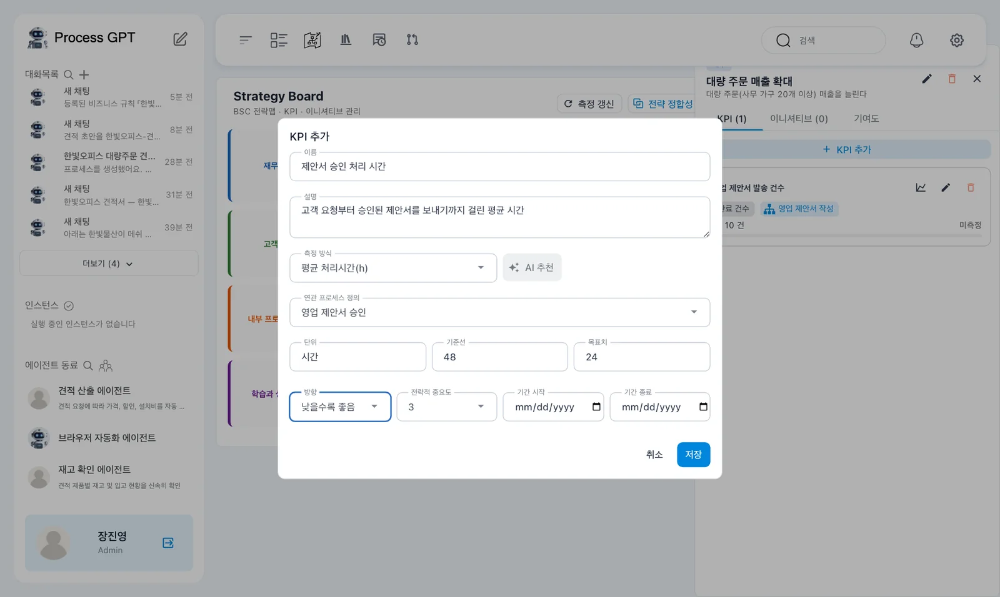
완료 건수는 늘어나는 방향으로 목표를 정했습니다. 처리 시간은 줄어드는 방향으로 정합니다. 단위가 시간인 칸에 분이나 초의 숫자를 그대로 넣지 않습니다.
「측정 방식」에는 「완료 건수」·「평균 처리시간(h)」·「설문 점수」·「외부 시스템 연동」·「수동 입력」이 있습니다. 이번 장에서는 앞의 세 방식을 실제로 사용합니다. 외부 시스템에서 매출을 읽거나 수동으로 측정값을 입력하는 실습은 하지 않습니다.
따라 하기 5 — 첫 측정값 갱신하기#
- 보드 위의 「측정 갱신」을 누릅니다.
- 목표 카드의 달성도를 확인합니다.
- 목표 패널을 열고 두 KPI의 현재값과 목표치를 읽습니다.
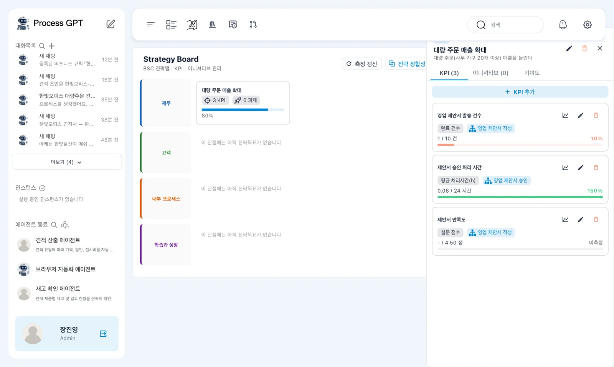
촬영에서는 목표 카드에 80%가 표시되었습니다. 패널에는 다음 값이 나왔습니다.
| KPI | 현재값 / 목표치 | 표시된 달성률 |
|---|---|---|
| 「영업 제안서 발송 건수」 | 「1 / 10 건」 | 10% |
| 「제안서 승인 처리 시간」 | 「0.06 / 24 시간」 | 150% |

처리 시간은 「낮을수록 좋음」으로 설정했습니다. 따라서 목표보다 훨씬 짧은 촬영 실행에서 150%가 표시되었습니다. 이 값을 오류율이나 완료율로 읽지 않습니다. 해당 KPI의 달성률 표시입니다.
150%를 시간 절감률로 옮겨 쓰지 않습니다
화면에 표시된 달성률은 150%입니다. 촬영 자료에는 달성률 계산식 전체가 없습니다. 이를 시간이 150% 줄었다는 뜻으로 설명하지 않습니다. 현재값 0.06시간, 목표치 24시간과 방향을 함께 읽습니다.
따라 하기 6 — 만족도 설문 KPI 추가하기#
- 목표 패널에서 「+ KPI 추가」를 누릅니다.
- 「이름」에 「제안서 만족도」, 「설명」에 「영업 제안서 작성을 마친 참여자의 만족도」를 입력합니다.
- 「측정 방식」으로 「설문 점수」를 고르고 「연관 프로세스 정의」에 「영업 제안서 작성」을 선택합니다.
- 「단위」는 「점」, 「목표치」는 4.5로 입력합니다.
- 「문항 추가」를 누릅니다. 자리표시가 「Q1」인 칸에 「이번 제안서 진행에 얼마나 만족하셨나요?」를 입력합니다.
- 저장하고 측정 상태를 확인합니다.
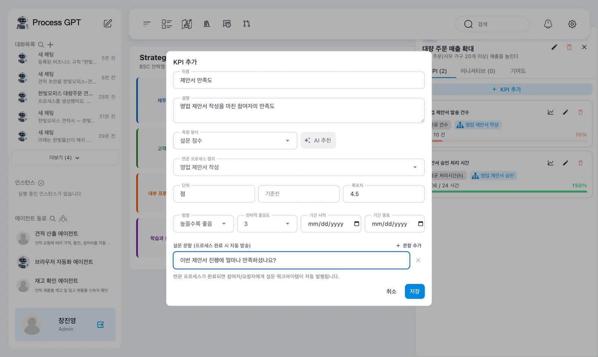
저장 직후에는 「- / 4.50 점」과 「미측정」이 표시되었습니다. 목표치 4.5를 입력한 것과 실제 응답 평균이 4.5인 것은 다릅니다. 아직 응답이 없는 시점에는 목표치만 있습니다.
이 설문은 영업 제안서 작성에 참여한 사람의 만족도를 묻습니다. 고객에게 보낸 설문이라고 바꾸어 설명하지 않습니다. 촬영에서는 김민지와 장진영에게 설문 업무가 생겼습니다.
따라 하기 7 — 제안서 작성을 한 번 더 완료하기#
설문 KPI를 저장한 뒤 「영업 제안서 작성」을 한 번 더 실행합니다. 이번에도 6장의 실행 방법을 사용합니다.
- 장진영으로 「영업 제안서 작성」을 실행합니다.
- 한빛물산 판교 사무실의 스탠딩 책상 8개, 예산 800만 원, 12월 중순 설치 요청을 입력합니다.
- 김민지에게 열린 제안서 작성 업무를 처리하고 제출합니다.
- 프로세스가 「COMPLETED」인지 확인합니다.
- 김민지의 업무 목록에서 「설문: 제안서 만족도」를 확인합니다.
촬영에서 완료된 실행 이름은 「영업 제안서 · 한빛물산 스탠딩책상 8개」였습니다. 김민지와 장진영 두 사람에게 설문 할 일이 생겼습니다.
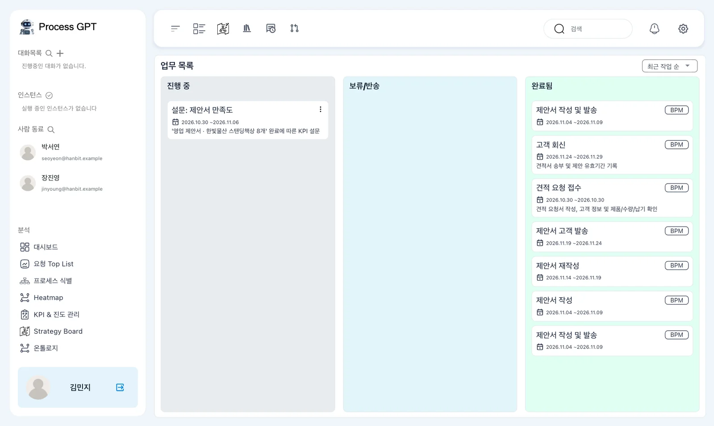
카드에는 「'영업 제안서 · 한빛물산 스탠딩책상 8개' 완료에 따른 KPI 설문」이라는 설명이 있습니다. 어떤 실행을 마친 뒤 생긴 설문인지 이 문장에서 확인합니다.
목표 설명과 집계 범위를 구분합니다
전략목표 설명은 사무 가구 20개 이상 주문입니다. 이번 추가 실행은 책상 8개인데도 연결한 프로세스를 완료하여 발송 건수가 늘었습니다. 목표 설명에 적은 수량 조건이 KPI 집계에 자동 적용된 것으로 해석하지 않습니다.
따라 하기 8 — 김민지와 장진영이 설문 응답하기#
- 김민지의 「설문: 제안서 만족도」를 엽니다.
- 완료된 프로세스 이름과 「이번 제안서 진행에 얼마나 만족하셨나요?」 문항을 읽습니다.
- 별 5개를 선택합니다.
- 「의견」에 「요청을 정리해 빠르게 제안서를 보낼 수 있었습니다.」를 입력하고 「제출」을 누릅니다.
- 「응답해 주셔서 감사합니다!」를 확인합니다.
- 장진영에게 온 같은 설문도 열어 별 4개로 응답하고 제출합니다.
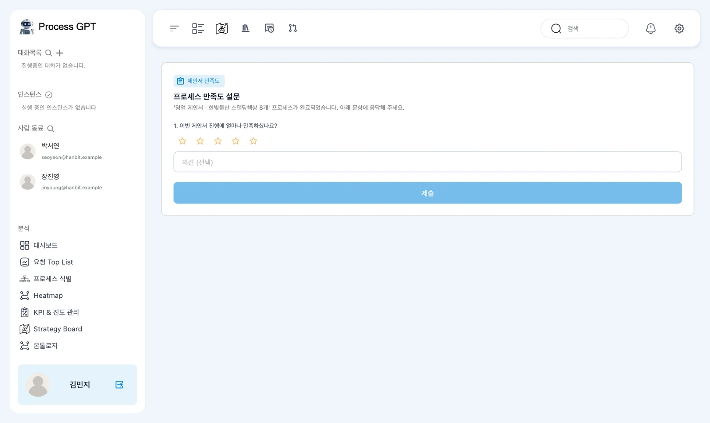
화면에는 「제안서 만족도」와 「프로세스 만족도 설문」이 있습니다. 「'영업 제안서 · 한빛물산 스탠딩책상 8개' 프로세스가 완료되었습니다. 아래 문항에 응답해 주세요.」라는 안내를 읽습니다.
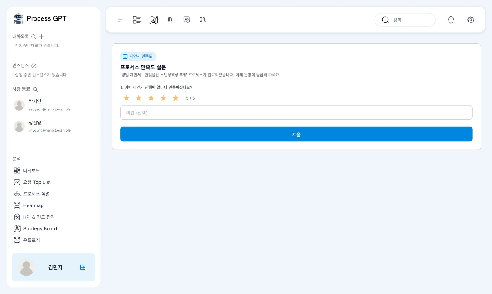
김민지의 응답은 5점이고 장진영의 응답은 4점입니다. 실습의 두 점수를 정답으로 받아들이지는 않습니다. 여기서는 응답이 측정값에 반영되는 과정을 확인하기 위해 촬영과 같은 값을 사용합니다.
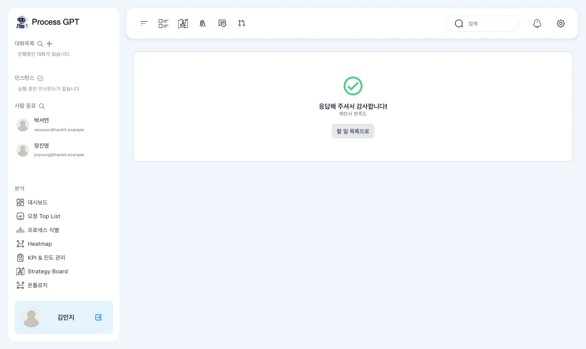
제출 뒤에는 「할 일 목록으로」가 보입니다. 설문을 제출한 것과 보드에서 측정값을 다시 읽는 것을 구분합니다. 다음 단계에서 관리자가 「측정 갱신」을 누릅니다.
따라 하기 9 — 두 번째 측정값 비교하기#
- 장진영으로 「Strategy Board」에 돌아옵니다.
- 「측정 갱신」을 누릅니다.
- 「대량 주문 매출 확대」를 열어 세 KPI의 값을 확인합니다.
- 첫 측정과 비교하여 바뀐 지표와 그대로인 지표를 구분합니다.
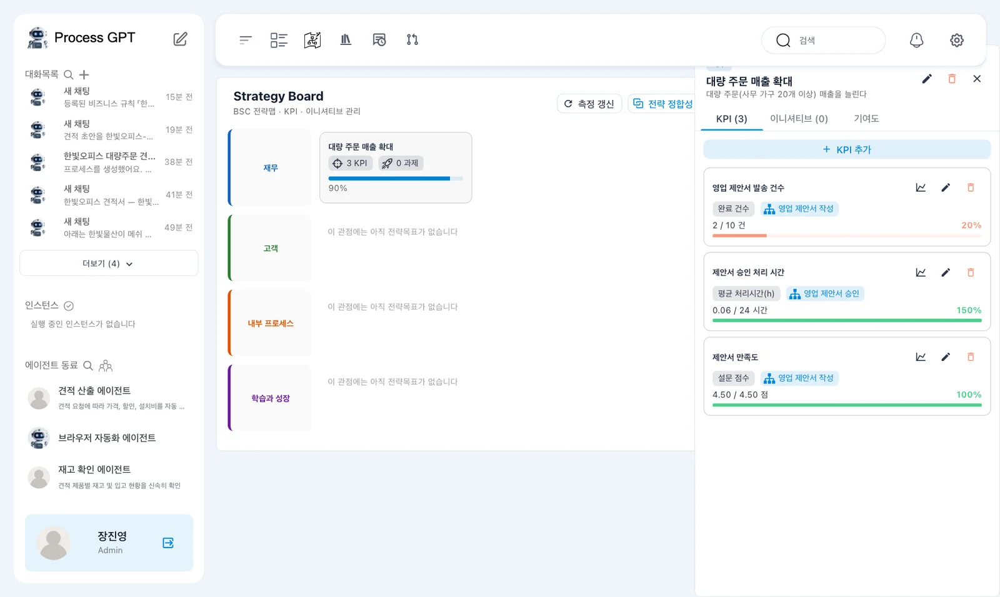
| KPI | 두 번째 측정값 | 표시된 달성률 |
|---|---|---|
| 「영업 제안서 발송 건수」 | 「2 / 10 건」 | 20% |
| 「제안서 승인 처리 시간」 | 「0.06 / 24 시간」 | 150% |
| 「제안서 만족도」 | 「4.50 / 4.50 점」 | 100% |
발송 건수는 1건에서 2건으로 늘었습니다. 만족도는 「미측정」에서 4.50점으로 바뀌었습니다. 두 응답의 평균인 4.5점과 맞습니다.
승인 처리 시간은 0.06시간으로 같았습니다. 이번에 추가로 완료한 프로세스는 「영업 제안서 작성」입니다. 처리시간 KPI가 연결된 「영업 제안서 승인」과 구분하여 읽습니다.
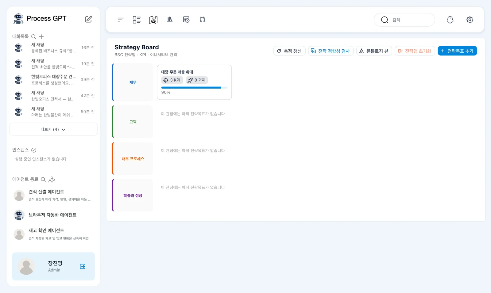
따라 하기 10 — 종합 화면과 온톨로지 확인하기#
- 「KPI & 진도 관리」 화면에서 종합 달성도와 목표별 표시를 확인합니다.
- KPI 달성률과 프로세스 파이프라인을 따로 읽습니다.
- 전략 보드의 「온톨로지 뷰」를 열어 계층 그래프와 탭을 확인합니다.
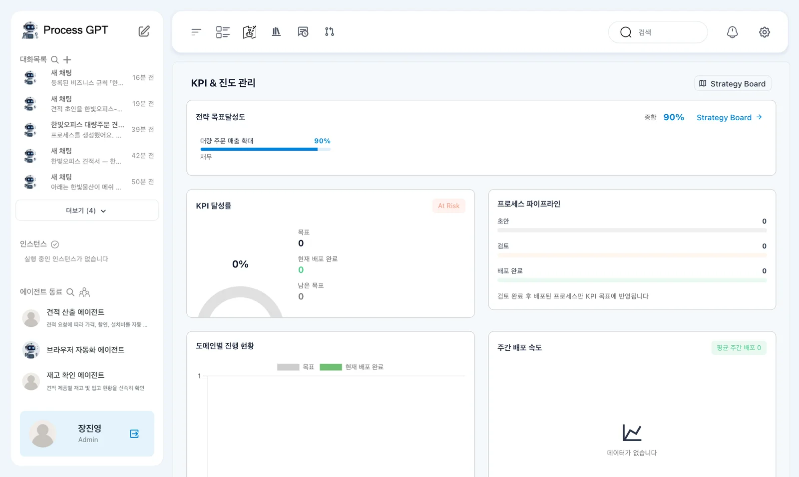
촬영에서는 「전략 목표달성도 종합 90%」와 「대량 주문 매출 확대 90% · 재무」가 표시되었습니다. 같은 화면의 KPI 달성률에는 「At Risk 0%」가 보였습니다.
프로세스 파이프라인은 초안 0, 검토 0, 배포 완료 0이었습니다. 「검토 완료 후 배포된 프로세스만 KPI 목표에 반영됩니다」라는 안내가 있었고, 주간 배포 속도에는 「데이터가 없습니다」가 나왔습니다.
서로 다른 영역의 값을 같은 뜻으로 읽지 않습니다
종합 90%와 「At Risk 0%」가 같은 화면에 보입니다. 파이프라인의 0도 완료 실행이 없다는 뜻으로 바꾸어 읽지 않습니다. 촬영 자료만으로 각 영역의 집계 관계를 확정할 수 없으므로, 이름과 안내를 붙여 기록합니다.
온톨로지 화면에는 「기업 운영 온톨로지」와 「전략 → 프로세스 → 리소스 → 지식 4레이어 계층 그래프」가 있습니다. 촬영에서는 「노드 28」·「관계 33」이 표시되었습니다.
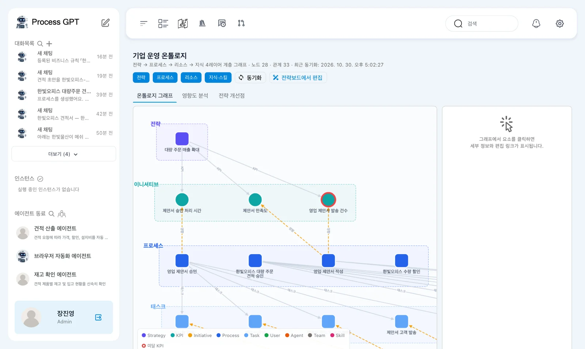
탭은 「온톨로지 그래프」·「영향도 분석」·「전략 개선점」입니다. 「전략보드에서 편집」도 있습니다. 이번에는 연결 관계를 보여 주는 화면을 확인합니다. 노드와 관계 수만으로 전략이 적절하다고 판정하지 않습니다.
다음 장으로#
전략목표에 세 KPI를 붙이고 실행 완료와 설문 응답을 측정값으로 확인했습니다. 목표 설명, 실제 집계 범위와 화면의 달성률을 나누어 읽었습니다. 18장에서는 설정을 살펴보고, 19장에서는 앞에서 배운 내용을 프로젝트로 이어갑니다.
확인 문제
- 발송 건수와 승인 처리 시간의 방향은 각각 어떻게 설정했나요?
- 만족도 KPI가 「미측정」에서 4.50점으로 바뀌기까지 무엇을 했나요?
- 「대량 주문 매출 확대」의 달성도 90%를 실제 매출 목표의 90% 달성으로 말해도 되나요?
답
- 발송 건수는 「높을수록 좋음」, 승인 처리 시간은 「낮을수록 좋음」입니다. 완료 건수 목표는 10건이고 처리 시간 목표는 24시간입니다.
- 설문 KPI를 저장하고 「영업 제안서 작성」을 한 번 더 완료했습니다. 김민지가 5점, 장진영이 4점으로 응답한 뒤 「측정 갱신」을 눌렀습니다.
- 안 됩니다. 이번에는 매출액을 측정하지 않았습니다. 완료 건수, 처리 시간과 참여자 만족도를 연결했으며, 목표 설명의 20개 이상 조건도 자동으로 집계에 적용된 것은 아닙니다.